Obrigado por escolher o Zelo+ para cuidar de quem você ama.
O Zelo+ é um dispenser de medicamentos para uso em casa. Ele guarda até três remédios, lembra o paciente na hora certa com som, luz e mensagens no visor, abre somente o compartimento daquela dose e avisa o cuidador e a família pelo celular se a dose for esquecida.
Este manual foi feito para o cuidador: a pessoa que instala, configura e acompanha o dispenser. As ilustrações mostram o produto, o visor e as telas do celular exatamente como aparecem no uso.
O que acompanha o produto, o que é preciso ter e os cuidados de segurança.
Ao ouvir o alarme, vai até o dispenser e aperta o botão. A porta certa abre sozinha; basta retirar o remédio. Nada mais é exigido do paciente.
Instala o dispenser, cadastra remédios, horários e contatos pelo celular, abastece os compartimentos e acompanha o histórico e os avisos.
| Cuidado | Por quê | |
|---|---|---|
| Coloque somente comprimidos e cápsulas secos, na embalagem original fracionada ou soltos. | Líquidos, pomadas e sachês abertos podem vazar e danificar o equipamento. | |
| Siga sempre a prescrição médica. O dispenser não substitui a orientação do médico ou do farmacêutico. | O Zelo+ lembra e libera o que foi cadastrado; a conferência da receita é do cuidador. | |
| Não force as tampas com a mão quando o dispenser estiver ligado. | Cada tampa é movida por um pequeno motor; forçar pode quebrar as engrenagens. | |
| Use a fonte que acompanha o produto ou outra de 5 V e 2 A ou mais, com conector USB-C. | Fontes fracas fazem o visor apagar e as portas travarem no meio do movimento. | |
| Mantenha em local plano, seco e ventilado, longe do fogão, da pia, do sol direto e do alcance de crianças. | Calor e umidade alteram os remédios e prejudicam a eletrônica. | |
| A tampa técnica (atrás das tampas dos remédios) é de uso exclusivo do cuidador. | Ela dá acesso aos motores e serve para a abertura de emergência. |
As partes do dispenser e para que serve cada uma.
| N.º | Parte | Para que serve |
|---|---|---|
| 1 | Tampas dos compartimentos 1, 2 e 3 | Cada compartimento guarda um remédio, sempre o mesmo. As etiquetas azul (1), verde (2) e roxa (3) são as mesmas cores usadas no visor e no celular. As tampas abrem e fecham sozinhas. |
| 2 | Tampa técnica | Cobre os motores das tampas. Fica presa por ímãs e por uma trava que se gira com uma moeda. Uso exclusivo do cuidador. |
| 3 | Botão | Na hora do remédio, o paciente aperta para abrir. Com a porta aberta, um novo toque fecha. Segurado por 10 s fora do horário, entra no modo do cuidador. |
| 4 | Visor colorido | Mostra a hora, a situação do dia, o remédio a tomar e as instruções. A cor de fundo indica o compartimento ou o tipo de aviso. |
| 5 | Luz de alerta | Pisca junto com o som do alarme, para chamar a atenção de quem ouve pouco. |
| 6 | Entrada USB-C (lateral direita) | Ligação da fonte de alimentação. Também aceita um power bank de celular em caso de falta de energia. |
| 7 | Saída de som (lateral esquerda) | Furos do alarme sonoro. Não cubra esta lateral nem encoste o dispenser na parede por este lado. |
Mapa das funções: tudo o que o dispenser faz pelo paciente e pelo cuidador.
O cuidador cadastra os remédios pelo celular e abastece os compartimentos; na hora certa o Zelo+ lembra o paciente, libera só o remédio daquela hora, avisa o cuidador e a família se a dose for esquecida e registra tudo para consulta.
Um por compartimento, cada um com até 6 horários por dia. Remédios do mesmo horário abrem juntos.
O cuidador e até 5 familiares recebem mensagens pelo Telegram.
O que acontece desde o alarme até o registro da dose.
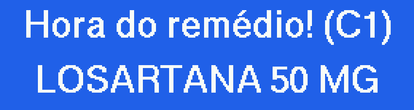
Alarme: o fundo tem a cor do compartimento e mostra o nome do remédio.
Porta aberta: o visor diz qual compartimento usar e conta o tempo.
Depois de 3 minutos, ou com um toque no botão, a porta fecha.
Cada tela, o que significa e o que fazer.
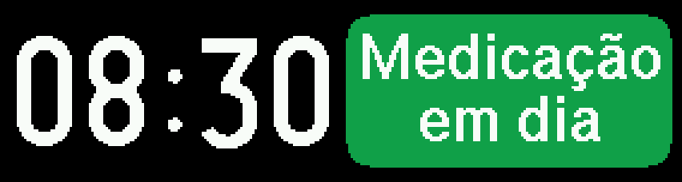
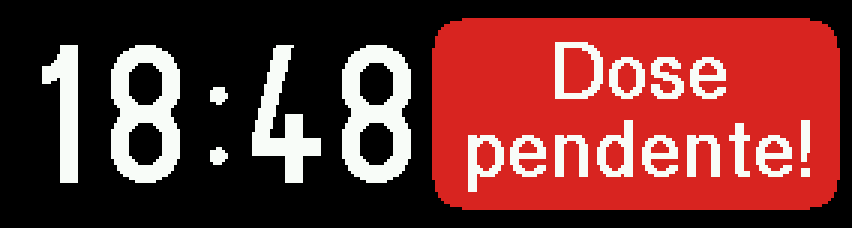
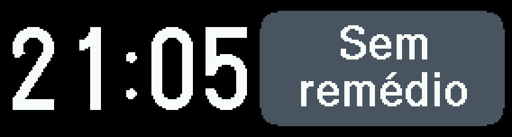
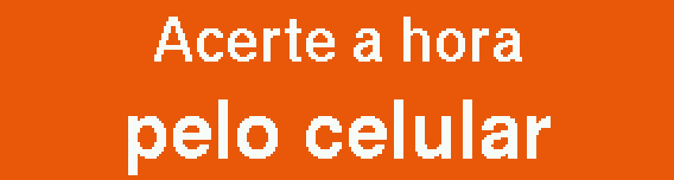
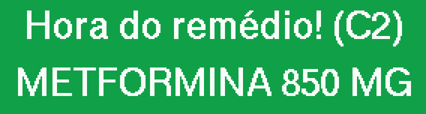
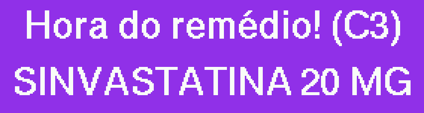
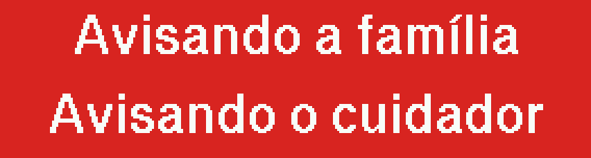
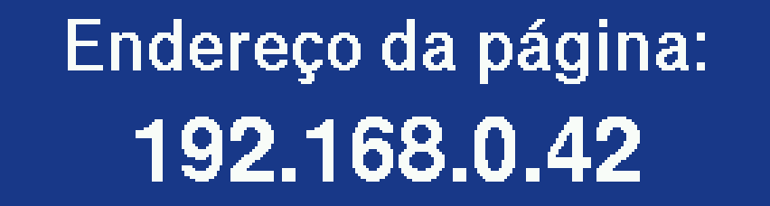
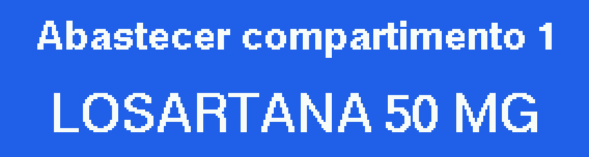
Ligar o dispenser e conectá-lo ao Wi-Fi da casa. Feito uma única vez.
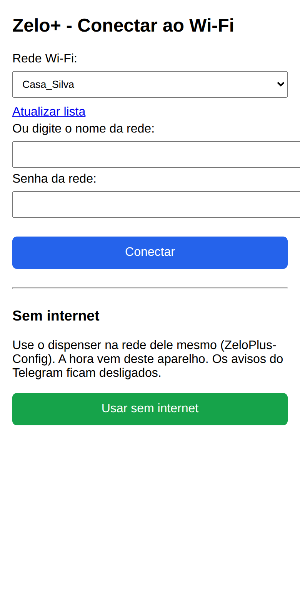
O "aplicativo" do Zelo+ é uma página aberta no navegador do celular. Não é preciso instalar nada.
Na página de conexão, toque em Usar sem internet. O dispenser cria a própria rede, ZeloPlus (senha zelo1234), e acerta o relógio pela hora do celular. Alarmes, portas e histórico funcionam; só os avisos pelo Telegram ficam desligados.
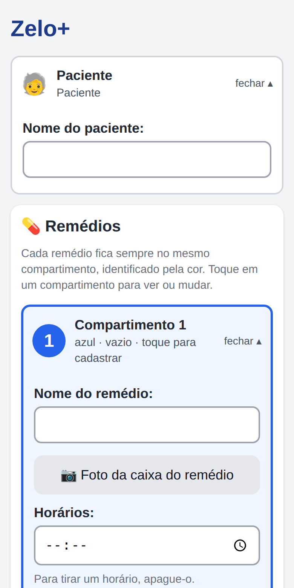
Tudo fica em uma única página, de cima para baixo. Toque em um item para abrir ou fechar.
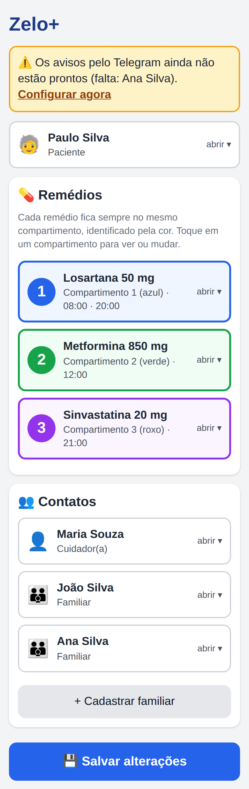
12345| N.º | Seção | O que se faz nela |
|---|---|---|
| 1 | Avisos | Faixas amarelas no topo indicam algo pendente, como um contato sem Telegram ou a falta de internet. |
| 2 | Paciente | Nome do paciente, usado nas mensagens. |
| 3 | Remédios | Os três compartimentos, com nome do remédio, horários e foto da caixa. |
| 4 | Contatos | Cuidador (obrigatório) e até 5 familiares. |
| 5 | Salvar alterações | Grava remédios, horários e contatos. |
Um remédio por compartimento, com até 6 horários por dia.
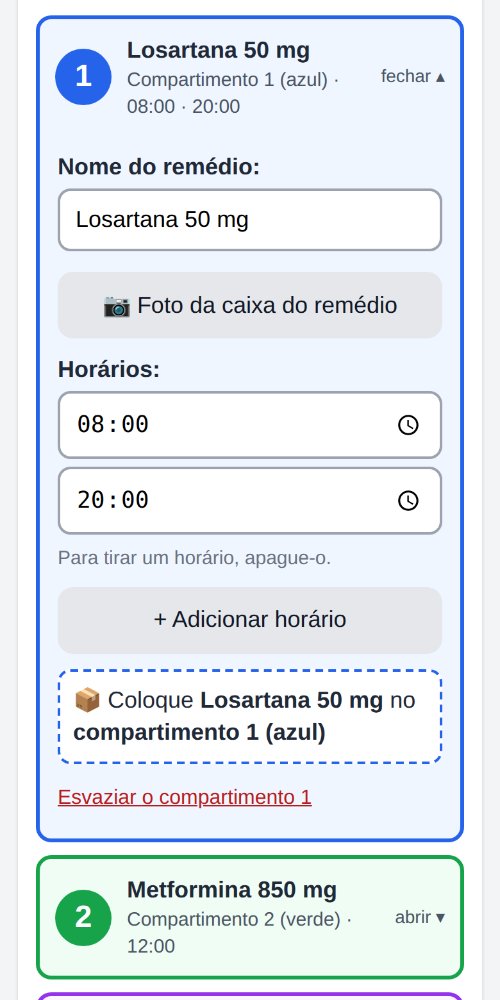
A câmera do celular lê o nome e a dosagem impressos na embalagem.
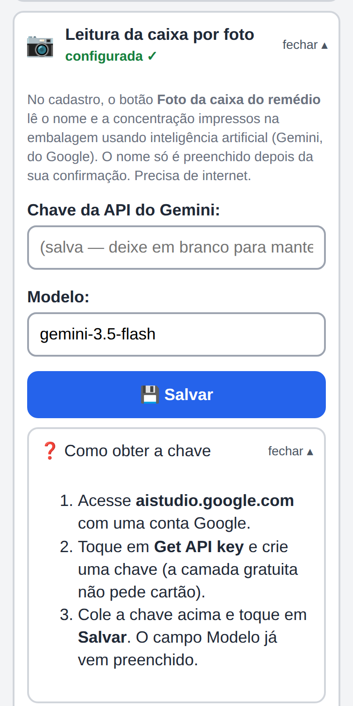
Quem recebe as mensagens quando uma dose é esquecida.
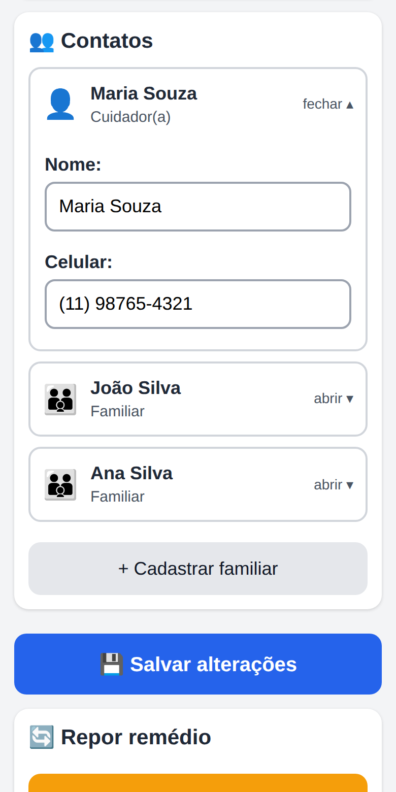
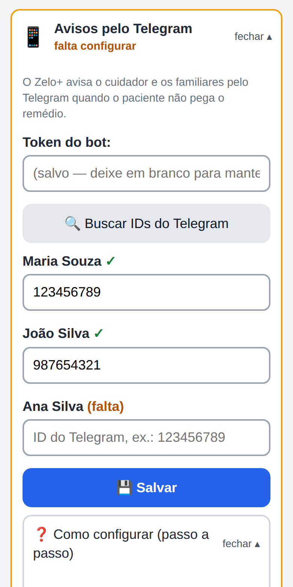
Em Contatos, preencha nome e celular do cuidador (obrigatório). Use + Cadastrar familiar para até 5 familiares. Toque em Salvar alterações.
No Telegram, abra o @BotFather, envie /newbot, escolha um nome e um usuário terminado em bot. Copie o token e cole na seção Avisos pelo Telegram.
Cada pessoa procura o bot no Telegram e toca em Iniciar. Depois, toque em Buscar IDs do Telegram e copie o ID de cada uma para o campo com o nome dela. Toque em Salvar.
As mensagens enviadas pelo Zelo+ e quando cada uma chega.
| Situação | Quando | Cuidador | Familiares |
|---|---|---|---|
| O paciente não abriu o compartimento | 6 min após o alarme | Recebe | — |
| O paciente não foi até o dispenser (o alarme para) | 12 min após o alarme | Recebe | Recebem |
| O paciente chegou depois do aviso | Na hora em que abrir | Recebe | Se foram avisados |
| Abertura pelo botão no modo do cuidador | Na hora | Recebe | — |
Abrir só o compartimento do remédio que está acabando.
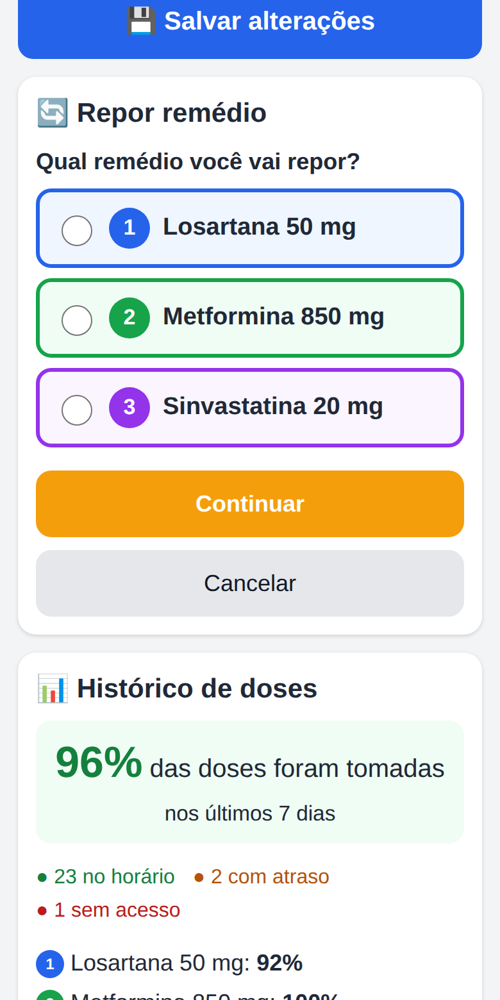
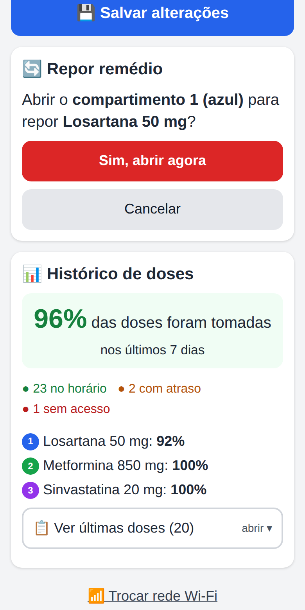
Acompanhe se as doses estão sendo tomadas no horário.
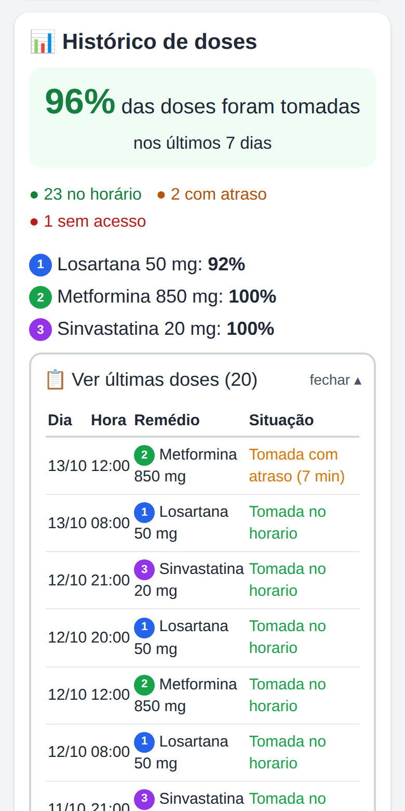
O número grande é a adesão: a parte das doses dos últimos 7 dias que foi retirada (no horário ou com atraso). Logo abaixo, a contagem por situação e a adesão de cada remédio.
| Situação | Significado |
|---|---|
| Tomada no horário | Aberto em até 6 minutos depois do alarme. |
| Tomada com atraso | Aberto depois de 6 minutos; mostra quanto tempo depois. |
| Sem acesso | Ninguém abriu o compartimento da dose. |
| Abertura manual | Aberto pelo cuidador no botão. Não entra na conta da adesão. |
Toque em Ver últimas doses para a lista completa e em Baixar histórico completo (planilha) para salvar um arquivo que abre no Excel ou no Google Planilhas.
Abrir qualquer compartimento pelo botão, sem usar o celular.
Fora do horário de dose, segure o botão. Depois de 2 s o visor conta o tempo que falta.
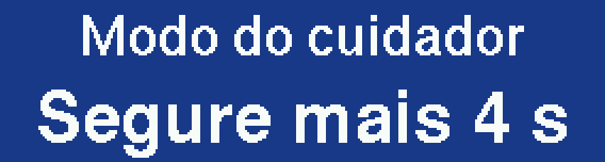
Aos 10 s o visor mostra a primeira opção: abrir o compartimento 1.
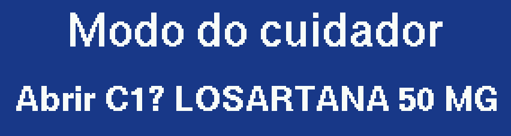
C1, C2, C3 e Sair, nessa ordem, voltando ao início.
O visor pede para soltar; ao soltar, a opção é executada.
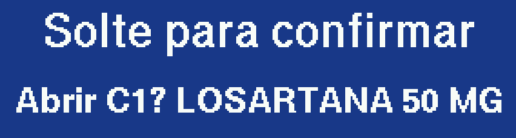
Fecha com um toque no botão ou sozinho em 3 minutos. O cuidador recebe mensagem.
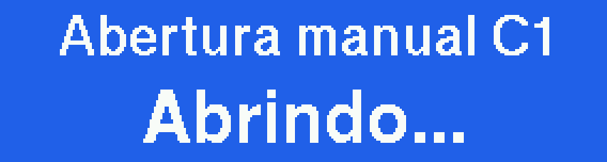
O dispenser continua cuidando do paciente quando a internet cai.
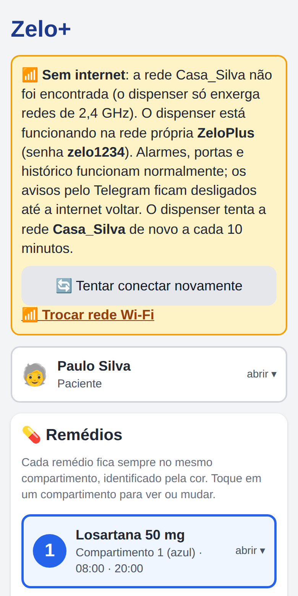
Sem internet e sem hora certa, os alarmes não tocam. Basta abrir a página no celular: a hora do celular é enviada ao dispenser automaticamente.
Como abrir um compartimento em qualquer situação.
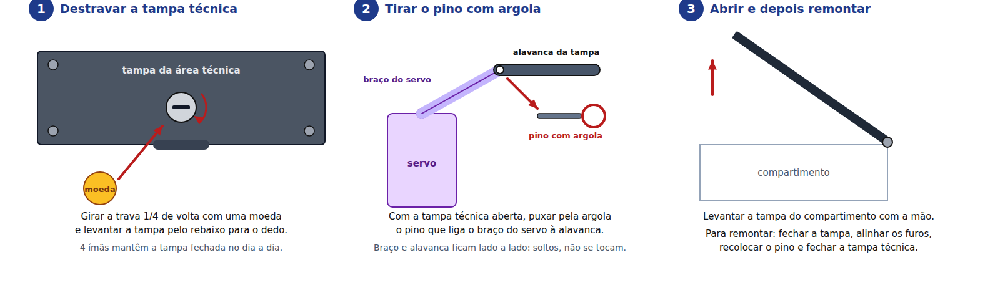
Pequenas tarefas que mantêm o dispenser confiável.
Feche todas as tampas, desligue o cabo e transporte o dispenser na horizontal, apoiado por baixo. Ao religar, o visor mostra o endereço da página; se a rede Wi-Fi for outra, use Trocar rede Wi-Fi.
O que observar e o que fazer.
| O que acontece | Causa provável | O que fazer |
|---|---|---|
| O alarme não tocou | Remédio sem horário, hora errada ou visor laranja "Acerte a hora". | Confira os horários na página. Se o visor estiver laranja, abra a página no celular para acertar a hora. |
| Visor apagado | Sem energia e bateria descarregada, ou fonte fraca. | Confira a tomada e o cabo USB-C. Use a fonte original (5 V, 2 A ou mais) ou um power bank. |
| Uma porta não abre ou para no meio | Fonte fraca, objeto travando a tampa ou pino solto. | Retire o que estiver sobre a tampa e use a fonte original. Se persistir, confira o pino na tampa técnica. |
| A página não abre no celular | Celular em outra rede ou endereço digitado errado. | Conecte o celular ao mesmo Wi-Fi do dispenser e digite o endereço mostrado no visor ao ligar. |
| A rede da casa não aparece | Rede de 5 GHz ou roteador distante. | Use a rede de 2,4 GHz ou aproxime o dispenser do roteador. Toque em Atualizar lista. |
| Faixa "Sem internet" | Roteador desligado, senha alterada ou queda da internet. | Aguarde a nova tentativa (10 min) ou toque em Tentar conectar novamente. Se a senha mudou, Trocar rede Wi-Fi. |
| Mensagens do Telegram não chegam | Pessoa sem ID, não tocou em Iniciar no bot ou falta de internet. | Procure "(falta)" na seção do Telegram, peça para a pessoa tocar em Iniciar, busque os IDs de novo e salve. |
| "Chave da IA recusada" | Chave criada em conta ou projeto sem permissão. | Crie uma chave nova no AI Studio com uma conta Google pessoal, em um projeto novo. |
| Visor "Dose pendente!" | A dose não foi retirada a tempo. | O paciente ainda pode apertar o botão para abrir. Avise-o ou verifique pessoalmente. |
| O botão não fecha a porta | Primeiros 7 segundos com a porta aberta. | Aguarde alguns segundos e toque de novo, ou deixe fechar sozinha. |
| Esqueceu a senha do Wi-Fi do dispenser | — | A rede própria é sempre ZeloPlus, senha zelo1234; na instalação, ZeloPlus-Config, sem senha. |
Dados técnicos e espaço para as informações da sua instalação.
| Especificações | |
|---|---|
| Dimensões | 210 × 130 × 100 mm |
| Compartimentos | 3, de 65,7 × 75,7 × 50,5 mm (cerca de 250 cm³ cada) |
| Horários | Até 6 por remédio |
| Contatos | Cuidador e até 5 familiares |
| Histórico | Últimas 60 doses, com exportação em planilha |
| Visor | Colorido, 320 × 170 pontos |
| Alarme | Som e luz, 1 min tocando e 1 min em silêncio, por até 12 min |
| Porta aberta | Fecha sozinha em 3 min |
| Alimentação | 5 V, 2 A ou mais, entrada USB-C |
| Bateria interna | Recarregável, mantém o funcionamento sem energia da tomada |
| Conexão | Wi-Fi 2,4 GHz, ou rede própria sem internet |
| Avisos | Telegram (requer internet) |
| Minha instalação | |
|---|---|
| Endereço da página | |
| Rede Wi-Fi | |
| Nome do bot | |
| Data da instalação | |
| N.º | Remédio | Horários |
|---|---|---|
| 1 | ||
| 2 | ||
| 3 |
Não. Cada compartimento guarda um único remédio, para evitar trocas. Remédios do mesmo horário ficam em compartimentos diferentes e abrem juntos.
O que acontece se faltar energia?A bateria interna mantém tudo funcionando. Os cadastros e o histórico ficam guardados mesmo com o dispenser desligado.
Não. O celular só é usado para configurar e consultar. Alarme e abertura funcionam sozinhos.
Mais de uma pessoa pode configurar?Sim. Qualquer celular na mesma rede abre a página. Combine quem faz as alterações para evitar mudanças cruzadas.